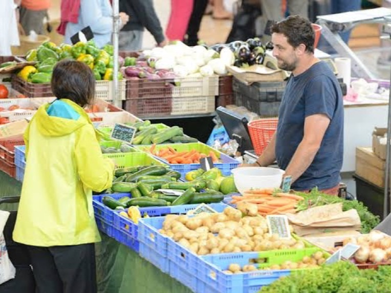
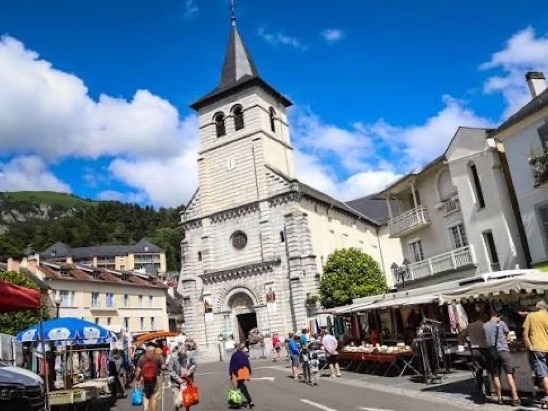

Nos marchés de la semaine
Trois matins par semaine, nous chargeons le camion et nous venons à vous, avec uniquement des fruits et légumes.
 Illustration
Illustration

Illustration
IllustrationCes trois visuels sont provisoires. Ils seront remplacés par des photos de nos propres étals.
Ce que vous trouvez sur les marchés
Sur les marchés, nous ne proposons que des fruits et légumes : nos propres productions maraîchères et une sélection du jour. Pour le fromage à la coupe, la charcuterie, la crèmerie, le vin, le pain et l’épicerie, rendez-vous aux Halles d’Orleix.